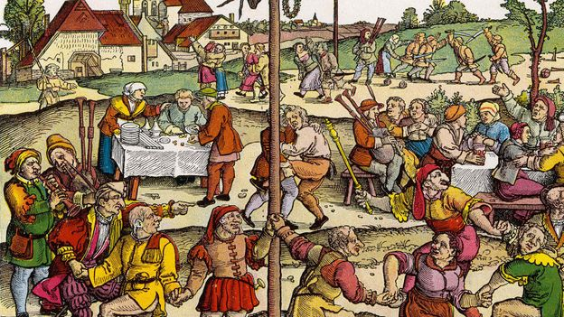
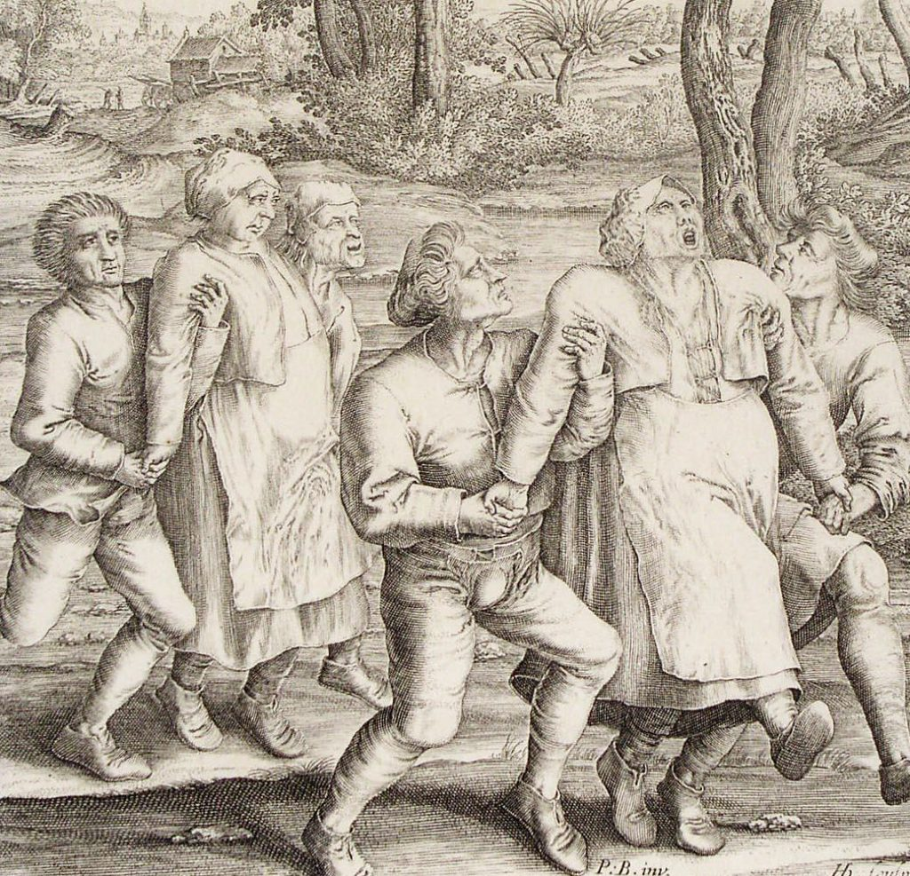

The Dancing Plague
In July 1518, residents of the city of Strasbourg (then part of the Holy Roman Empire) were struck by a sudden and seemingly uncontrollable urge to dance. The hysteria kicked off when a woman known as Frau Troffea stepped into the street and began to silently twist, twirl and shake. She kept up her solo dance-a-thon for nearly a week, and before long, some three-dozen other Strasbourgeois had joined in. By August, the dancing epidemic had claimed as many as 400 victims. With no other explanation for the phenomenon, local physicians blamed it on “hot blood” and suggested the afflicted simply gyrate the fever away. A stage was constructed and professional dancers were brought in. The town even hired a band to provide backing music, but it wasn’t long before the marathon started to take its toll. Many dancers collapsed from sheer exhaustion. Some even died from strokes and heart attacks. The strange episode didn’t end until September, when the dancers were whisked away to a mountaintop shrine to pray for absolution.
The Strasbourg dancing plague might sound like the stuff of legend, but it’s well documented in 16th century historical records. It’s also not the only known incident of its kind. Similar manias took place in Switzerland, Germany and Holland, though few were as large—or deadly—as the one triggered in 1518.
Contemporary explanations for the dancing plague included demonic possession and overheated blood. Investigators in the 20th century suggested that the afflicted might have consumed bread made from rye flour contaminated with the fungal disease ergot, which is known to produce convulsions. American sociologist Robert Bartholomew posited that the dancers were adherents of heretical sects, dancing to attract divine favour. The most widely accepted theory was that of American medical historian John Waller, who laid out in several papers his reasons for believing that the dancing plague was a form of mass psychogenic disorder. Such outbreaks take place under circumstances of extreme stress and generally take form based on local fears. In the case of the dancing plague of 1518, Waller cited a series of famines and the presence of such diseases as smallpox and syphilis as the overwhelming stressors affecting residents of Strasbourg. He further maintained that there was a local belief that those who failed to propitiate St. Vitus, patron saint of epileptics and of dancers, would be cursed by being forced to dance.
The 1518 event was the most thoroughly documented and probably the last of several such outbreaks in Europe, which took place largely between the 10th and 16th centuries. The otherwise best known of these took place in 1374; that eruption spread to several towns along the Rhine River.
What could have led people to dance themselves to death? According to historian John Waller, the explanation most likely concerns St. Vitus, a Catholic saint who pious 16th century Europeans believed had the power to curse people with a dancing plague. When combined with the horrors of disease and famine, both of which were tearing through Strasbourg in 1518, the St. Vitus superstition may have triggered a stress-induced hysteria that took hold of much of the city. Other theories have suggested the dancers were members of a religious cult, or even that they accidentally ingested ergot, a toxic mold that grows on damp rye and produces spasms and hallucinations.
Source: History